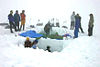

snowpack
phenomenon

Source: Wikipedia
Wikipedia Page (Something wrong with this association? Let us know.)
Wikidata Page (Something wrong with this association? Let us know.)
Occurs in:
- atmosphere_bottom_air_flowing_snowpack__log-law_roughness_length
- snowpack__age
- snowpack__cold_energy-per-area_density
- snowpack__degree-day_coefficient
- snowpack__degree-day_threshold_temperature
- snowpack__depth
- snowpack_snow_desublimation__mass_flux
- snowpack_snow_desublimation__volume_flux
- snowpack__diurnal_max_of_temperature
- snowpack__diurnal_min_of_temperature
- snowpack__diurnal_range_of_temperature
- snowpack_snow_desublimation__domain_time_integral_of_volume_flux
- snowpack_meltwater__domain_time_integral_of_volume_flux
- snowpack_snow_sublimation__domain_time_integral_of_volume_flux
- snowpack__initial_depth
- snowpack__initial_leq_depth
- snowpack_isentropic-process__compressibility
- snowpack_isothermal-process__compressibility
- snowpack__leq_depth
- snowpack__mass-per-volume_density
- snowpack__mean_of_temperature
- snowpack_meltwater__mass_flux
- snowpack_meltwater__volume_flux
- snowpack_snow_sublimation__mass_flux
- snowpack_snow_sublimation__volume_flux
- snowpack__thermal_quality
- snowpack__time_derivative_of_depth
- snowpack__time_derivative_of_temperature
- snowpack__z_mean_of_mass-per-volume_density
- snowpack_isobaric-process__z_mean_of_mass-specific_heat_capacity
- snowpack_bottom__temperature
- snowpack_bottom_conduction__net_heat_energy_flux
- snowpack_core__diameter
- snowpack_core__length
- snowpack_core__volume
- snowpack_grains__mean_of_diameter
- snowpack_ice-layer__count
- snowpack_meltwater__mass_flux
- snowpack_meltwater__volume_flux
- snowpack_radiation~incoming~longwave~absorbed__energy_flux
- snowpack_radiation~incoming~longwave_absorption__absorptance
- snowpack_radiation~incoming~longwave__energy_flux
- snowpack_radiation~incoming~longwave_reflection__reflectance
- snowpack_radiation~incoming~longwave~reflected__energy_flux
- snowpack_radiation~incoming~shortwave~absorbed__energy_flux
- snowpack_radiation~incoming~shortwave_absorption__absorptance
- snowpack_radiation~incoming~shortwave__energy_flux
- snowpack_radiation~incoming~shortwave_reflection__reflectance
- snowpack_radiation~incoming~shortwave~reflected__energy_flux
- snowpack_radiation~incoming~absorbed__energy_flux
- snowpack_radiation~incoming_absorption__absorptance
- snowpack_radiation~incoming__energy_flux
- snowpack_radiation~incoming_reflection__reflectance
- snowpack_radiation~incoming~reflected__energy_flux
- snowpack_radiation~outgoing~longwave_emission__emittance
- snowpack_radiation~outgoing~longwave~emitted__energy_flux
- snowpack_snow~new__depth
- snowpack_surface__indentation_hardness
- snowpack_top__albedo
- snowpack_top__emissivity
- snowpack_top__temperature
- snowpack_top_air__temperature
- snowpack_top__net_latent_heat_energy_flux
- snowpack_top__net_sensible_heat_energy_flux
- snowpack_top_surface__indentation_hardness
- snowpack_water~liquid__mass_fraction
- snowpack_water~liquid__volume_fraction
- land_surface_snowpack__depth